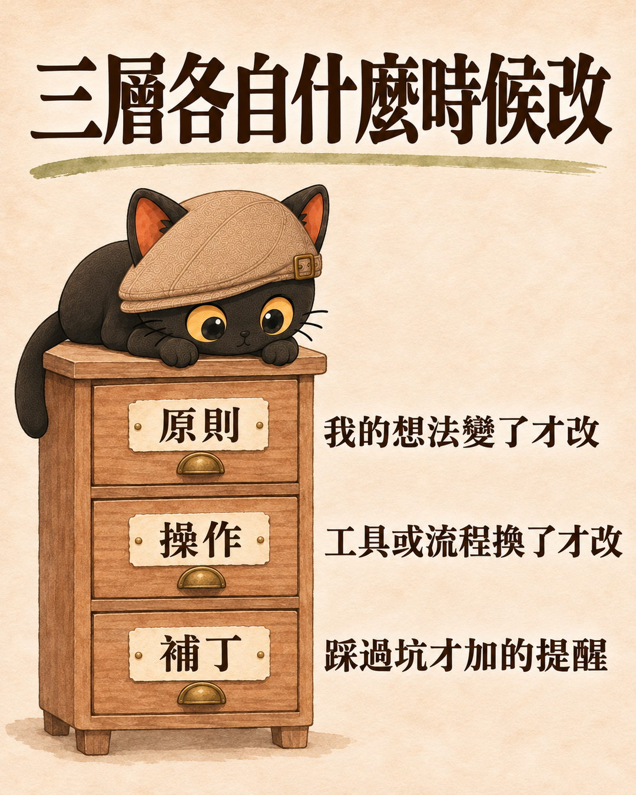
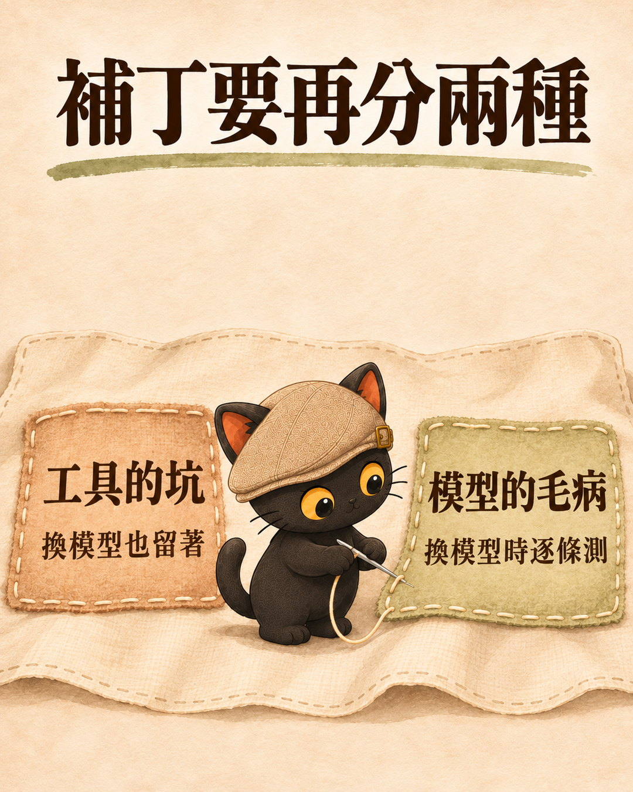

AI 每隔一陣子就出新模型。寫過技能包的人會遇到同一個問題：換了模型，原本寫給 AI 的那些規則要不要整份重寫。我最近看到一個把技能包分兩層的建議，跟 AI 討論之後，覺得我的情況分三層比較好用：原則、操作、補丁。補丁是指踩過坑之後，為了防 AI 再犯錯加上去的提醒。三層各有各的修改時機，換模型時要逐條檢討的，是補丁裡針對 AI 習慣加的那一種。這篇是觀點文章，我自己的技能包還在照這個分法整理，做到哪裡文末會講清楚。
技能包是寫給 AI 看的操作手冊：把一件工作的做法、標準、注意事項寫成檔案，AI 每次做這件事就照著做。
- 已經寫了幾份技能包或規則檔，每次 AI 出新模型都不確定要不要重寫的人
- 技能包越寫越長，分不清哪些規則還有用的人
- 幫客戶或團隊建 AI 工作流，想讓這些規則換了模型還能繼續用的顧問
- 技能包裡的內容可以分成原則、操作、補丁三層，三層修改的時機不同
- 換新模型時，原則不用動，操作通常不用動，要逐條檢討的是補丁
- 補丁要再分成工具的坑和模型的毛病，工具的坑留著，模型的毛病換模型時優先檢討
起點：一個把技能包分成兩層的建議
最近看到一個建議，原文照錄：
意思是把技能包分成兩層。一層是不會變的業務規則，例如品牌語氣、受眾、不能碰的東西。另一層是給模型的操作步驟。換新模型時，只重寫第二層。
這個建議點出一件事：技能包裡有些內容不會跟著模型變。品牌語氣、受眾、不能碰的東西，換哪個模型都一樣。
我順著這個方向再想，問了 AI 一句：
操作步驟換了模型，通常不用重寫
討論下來，我想調整的是「換新模型只重寫第二層」這一句。
操作步驟多半跟著工具和環境走。拿我自己的技能包來看，操作寫的是這類事情：請另一家 AI 審稿要下哪個指令、部署網頁要走哪一支腳本、刪檔案要走哪個入口。這些步驟寫的是工具怎麼用。模型換了，工具沒換，步驟就不用動。
跟模型綁在一起的是另一種內容：AI 以前犯過錯，我為了防它再犯，加上去的提醒。這種內容我叫它補丁。
兩種分法各有適合的情況。技能包主要是對話和寫作的指令、沒有接太多工具的人，分兩層就夠用。我的技能包裡有很多呼叫工具、跑腳本的步驟，跟防 AI 犯錯的提醒混在同一層，換模型時就得整層重看，連工具怎麼用的那些步驟也要一起看過。所以我把它拆成三層。
技能包三層分法：原則、操作、補丁各自什麼時候改
| 層 | 放什麼 | 什麼時候改 | 換新模型時 |
|---|---|---|---|
| 原則 | 要什麼、不能碰什麼。例如品牌語氣、受眾、紅線 | 我的想法變了才改 | 不用動 |
| 操作 | 步驟、工具、指令 | 工具或流程換了才改 | 通常不用動 |
| 補丁：工具的坑 | 工具或電腦環境本身的限制 | 工具或環境換了才改 | 留著 |
| 補丁：模型的毛病 | 為了防 AI 的習慣加的提醒 | 換模型時逐條檢討 | 逐條測，測過沒走樣才刪 |
三層的差別在「誰變了才要改」：原則跟著我走，操作和工具的坑跟著工具走，模型的毛病跟著模型走。

補丁要再分兩種：工具的坑和模型的毛病

補丁裡面有兩種東西，處理方式相反。
工具的坑，換了模型也要留。下面兩個例子有指令，看不懂指令沒關係，重點是問題出在哪裡。
第一個例子：在背景執行另一家 AI 的指令時，輸入要另外接好（我的做法是在指令後面加 < /dev/null），不然它會卡住等輸入。
第二個例子：我官網技能包的踩雷清單裡有一條，改某一支檢查腳本時不能用 mapfile 這個指令，因為 macOS 內建的 bash 3.2 沒有它。
這兩個坑都出在工具和電腦環境上，換哪個模型都還在。
模型的毛病，換了模型可能就不需要。例如反覆叮嚀「一定要先讀檔」。這類提醒是針對 AI 當時的習慣加上去的，新模型如果本來就會先讀，這句就多了。
- AI 換新版，下指令的方式要跟著改嗎？：那篇整理官方指南裡「別再叫它仔細想」這類例子，這篇講的是這類提醒在技能包裡該放哪一層。
寫每條規則之前先問一句：這條是原則、操作還是補丁
落到每天的做法，只有三件事。
- 新寫一條規則時先問一句：這條是原則、操作還是補丁。是補丁，就順手標它是工具的坑還是模型的毛病。
- 小的技能包不用硬切成三份檔案，把這一句當成檢查問句就好。
- 換新模型時，把標成「模型的毛病」的補丁拿出來逐條看。拿掉一條，就拿常做的工作多跑幾次，以前出過錯的情境優先跑。穩定沒有走樣再真的刪，刪掉之後也先觀察一陣子。
- 改完規則，怎麼知道 AI 到底有沒有變乖？：怎麼出固定的題目、同一題跑三次，那篇有做法。這篇只講哪些規則該拿出來測。
已經寫好的技能包，可以請 AI 先分一次類。下面這段可以直接貼：
這段提示詞要注意三件事。
- 一條規則裡可能混著兩層。前面提到我踩雷清單裡的那一條，前半是版面規定（每張表格都要包一層外框），後半才是
mapfile那個工具的坑。 - AI 分的類只是初稿，哪一條算原則要由寫規則的人自己決定。
- 替客戶或同事的技能包分類時，哪一條算原則要回頭問原本寫規則的人。
- 規則檔越寫越長，AI 有照做嗎？：那篇盤點哪些規則真的有機制在執行，這篇講的是換模型時哪些規則該拿出來檢討。
我自己的技能包現在做到哪裡
我比較大的技能包，結構上已經接近三層：主檔開頭的鐵則是原則，各個模式和參考檔是操作，踩雷清單是補丁。
缺的是補丁沒有標來源，看不出哪一條是工具的坑、哪一條是模型的毛病。
- Claude Skills 是什麼？把你的專業流程，變成 AI 能重複執行的知識資產：還沒寫過技能包的人，先看這篇。
- 換了另一家 AI，技能包要怎麼搬？：交接指令，難的是決定不寫什麼：這篇講同一家換新模型，那篇講換到另一家 AI。